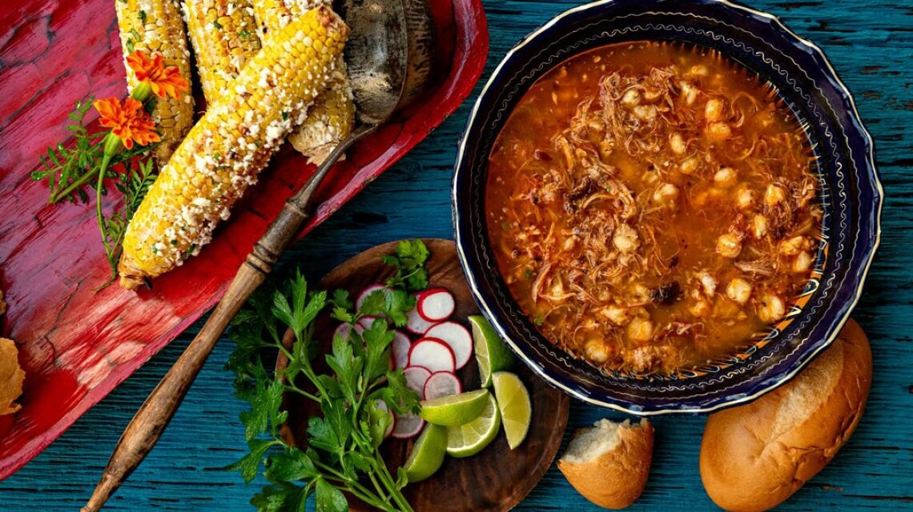

Home
Recipes
History
Locations
Recipes
Ingredients
5 liters of water
1/2 onion, cut in half
4 garlic cloves
3 tablespoons of salt
1 1/2 kilos of precooked hominy corn
1/2 kilo of pork ribs, cut into pieces
1 kilo of pork shoulder (or pork meat) cut into pieces
5 bay leaves
14 guajillo chiles, seeded and soaked in hot water
2 ancho chiles, seeded and soaked in hot water
2 cups of water
1/4 onion, cut into pieces
2 garlic cloves
1 teaspoon ground cumin
1 teaspoon ground black pepper
Dried oregano
Ground árbol chile
Finely chopped onion
Thinly sliced romaine lettuce
Radishes, sliced
Limes
Corn tostadas
190 grams of sour cream
100 grams of grated Cotija cheese

Pozole
Rojo
https://www.youtube.com/watch?v=PbGCUcNSoOQ
Instructions
Cook the base:
Heat the 5 liters of water with the onion, 4 garlic cloves, and salt. When it starts to boil, add the hominy corn and cook for about 1 hour and 20 minutes, or until tender. Add the pork ribs, pork meat, and bay leaves; cook for 1 hour and 30 minutes, or until the meat is tender. Remove the garlic, onion, bay leaves, and the pork meat. Shred the pork and set aside.
Prepare the chile sauce:
Blend the soaked chiles with the 2 cups of water, 1/4 onion, 2 garlic cloves, cumin, and black pepper. Strain and pour into the pot with the hominy; cook for 30 minutes more.
Serve:
Serve the pozole and garnish with dried oregano, ground árbol chile, chopped onion, lettuce, radishes, and lime juice. Serve with tostadas topped with sour cream and Cotija cheese.